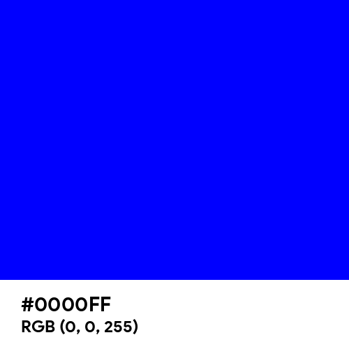
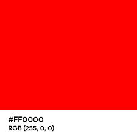
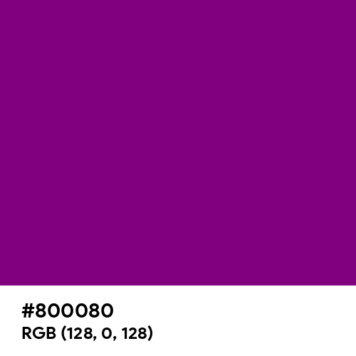
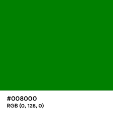
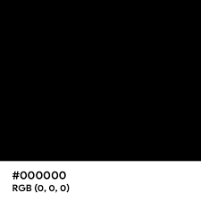
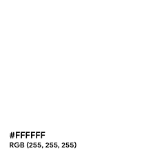
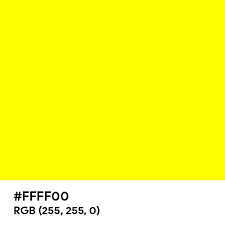
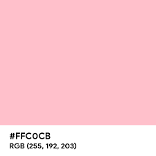
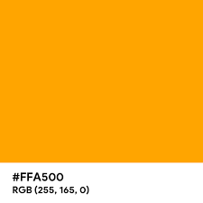
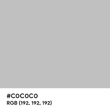

Welcome
To Fav Colors Website
Roses are red, violets are blue, and in between are a million other hues. But which one of these colors is, statistically speaking, the most popular around the world? The perception and categorization of colors, however, does seem to be fairly universal. In other words, language shapes the perception of reality. But that's not what the World Color Survey found. Instead, the survey found that across cultures, people tended to name hues the same way. So in this website, you can find the most popular color around the world. Enjoy!
Blue
 There’s a good reason why most people say blue is their favorite color — it’s calming, soothing, and symbolizes the positive. Bright blues inspire ideas of loyalty, confidence, security, and reliable authority. Many companies and brands use these shades in their logos and messaging precisely because of these associations.
As the color of the sky and the sea, blue is also used to imply a connection to nature. The turquoise shades you might see in the waters of the Caribbean Sea not only calm people but can also energize them. Light sky blue can make people feel contemplative and serene.
Red
 Red has meanings on two different ends of the human emotional spectrum. It can symbolize passion and strength. There’s a reason why everything is red on Valentine’s Day — the color of love inspires people to strive for their romantic goals, for example.
But it’s not all hugs and kisses. Red is also a symbol of wrath and danger. Angry people often say they see this color, plus the Stop sign is red as well. While red can be positive or negative, it’s definitely the color of action. Red gets people moving, whether it’s towards the target of their passion or away from a risky situation.
Purple
 Purple is a rare color in nature, and for the longest time, purple dyes were extremely difficult and expensive to produce. As a result, only the wealthiest and most powerful people could afford it. To this day, we think of purple as the color of royalty and luxury. Consequently, it brings up a feeling of trust and reliability.
Purple’s rarity also gives it an air of mystery. It’s associated with creativity and the realm of fantasy — think about how many times magic gets portrayed as purple in popular culture. Purple can also be an inspirational color that sparks the imagination and encourages us to try new things.
Green
 Green is among the most multipurpose colors on the color wheel. It’s everywhere around us — in plants, money, foods, and even traffic lights. There’s a biological reason as well; the human eye can see more shades of green than any other color.
Associated with nature and positivity, green can inspire feelings of harmony, growth, safety, and success. It’s also a calming color that makes people feel safe and comfortable. Green is one of the most popular colors, and it’s a safe choice as your design’s primary color.
Black
 Black is a power color that adds gravity and strength to your message. Used sparingly, black can help your design look polished and minimal. Black backgrounds are an increasingly popular color choice in web design, but be careful that it doesn’t make your interface too dark and heavy.
White
 White often symbolizes simplicity, purity, and cleanliness. Often used to give contrast to your designs, white provides a clean, neutral slate that keeps you from crowding your design too much. “It’s there to give breathing room to other elements and to be a background to showcase something you want to bring more attention to,” says Ackerman.
Yellow
 The color of sunshine, yellow brings about positive feelings. Joy, happiness, and hope are all within yellow’s domain. It can boost confidence, curiosity, and even improve learning. There’s just something about yellow that makes us think logically and positively.
At the same time, though, yellow can cause anxious and uncomfortable feelings. A lot of yellow implies there’s risky business happening. Think about warning signs or potentially dangerous animals, like wasps. Both use yellow to tell you to keep your distance. It can also signify cowardice, hence the phrase “yellow-bellied.”
Pink
 Once a color for boys, today pink is mainly associated with feminine traits. Soft and pastel pinks inspire feelings of kindness and compassion. Pink is a nurturing, playful, and nostalgic color that takes people back to their childhoods.
That said, pink is a color of opposites since it can make us think of both innocence and burning passion. Bright and hot pinks are associated with love, romance, and even lust. Intense pinks create a sense of urgency. Because it has white mixed into it, though, pink doesn’t inspire the same kind of aggressive action as red.
Orange
 A mix of red and yellow, orange combines the passion of the former with the positivity of the latter. Bright and vibrant oranges are fun colors that burst with youthfulness, energy, and happiness. They inspire creativity and uplift people’s moods. Golden oranges also exude a sense of luxury and prestige.
On the other hand, dark and almost brown, drab oranges — like decomposing autumn leaves — can elicit feelings of deceit or hopelessness. Even the energy of bright oranges can create ideas of impatience. These aren’t as common as the positive associations, but as a designer you should be aware of them.
Silver
 In RGB values, silver comprises R: 192, G: 192, and B: 192. Silver is a metallic, shiny version of gray (hex #808080). It's not a true or solid color but rather a reflective tone. To achieve silver, you must apply a reflective pigment to a gray base. This can either be something physical like metallic paint, or an editing effect that adds a gleam to your gray.
Profile
| NAMA | : | MUHAMMAD IRKHAM NURMAULUDIFA | ||
| NIM | : | 10122222 | ||
| KELAS | : | IF-6 |
This website is made by Muhammad Irkham Nurmauludifa for the purpose of Web Programming course in Universitas Komputer Indonesia.